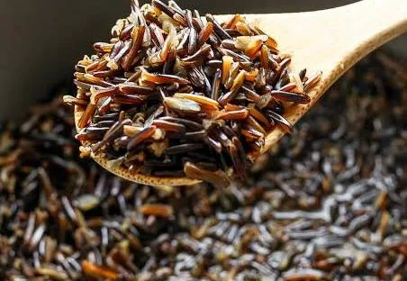
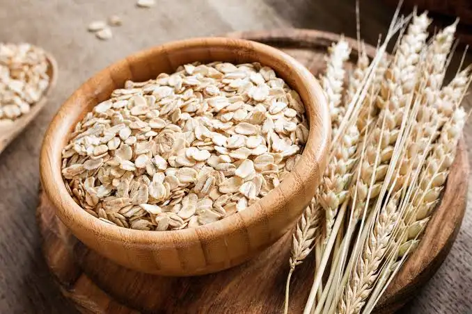
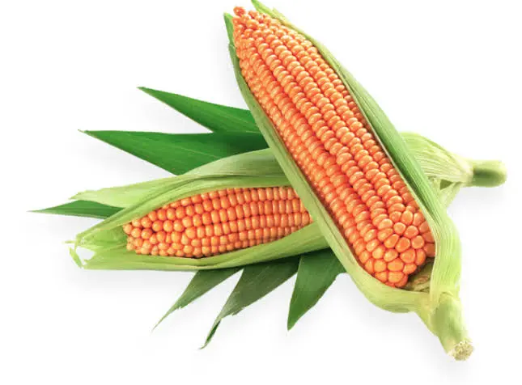
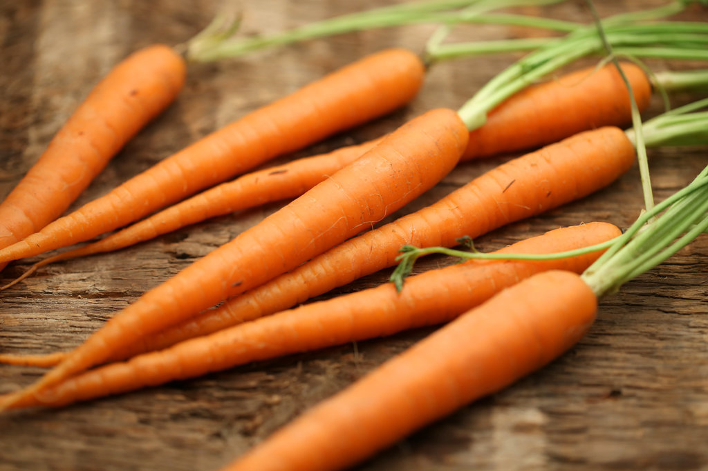
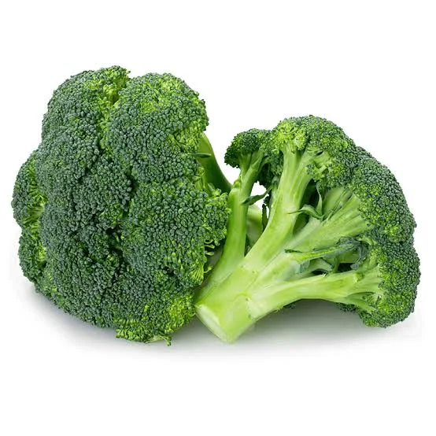
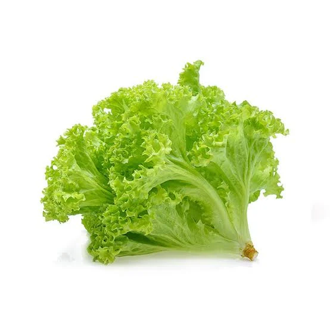
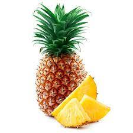
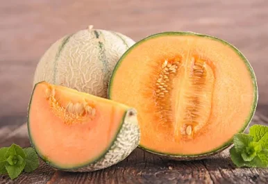
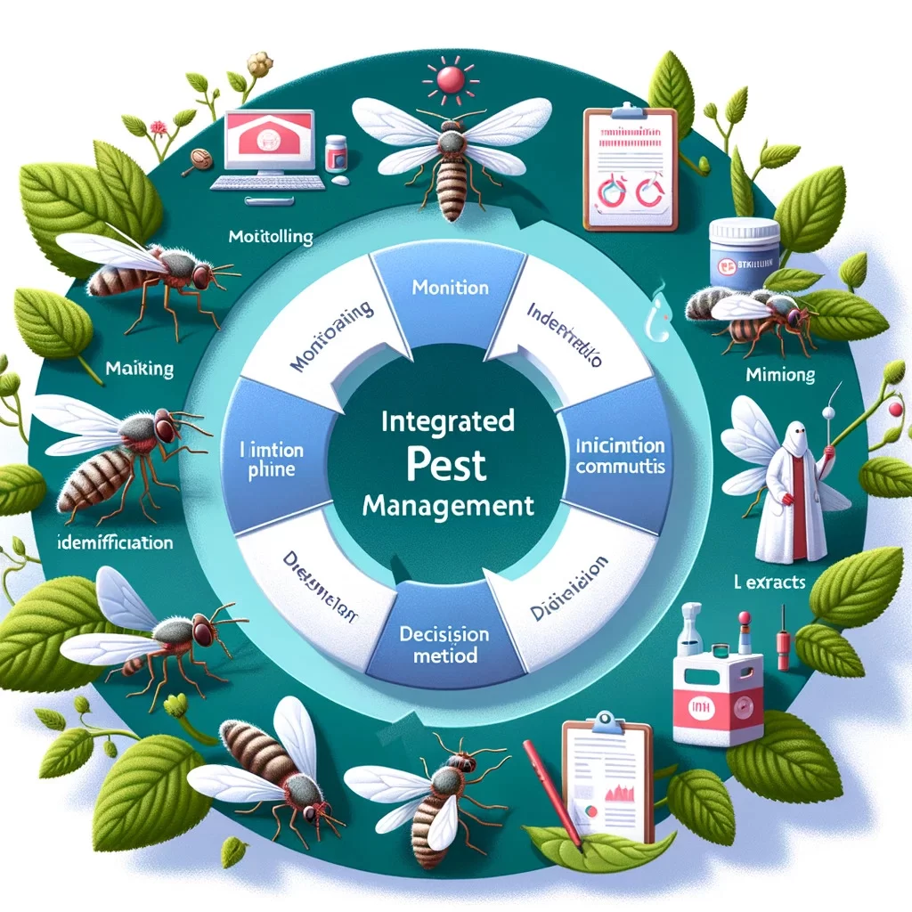

.jpeg)

Your comprehensive resource for detailed guides, crop management, and expert agricultural advice.
A collection of step-by-step farming guides categorized by crop type, season, and agricultural method.
Master the art of agriculture with our curated methodologies.
Summary: Learn how to maximize water efficiency using drip irrigation.
Summary: Preparing nutrient-rich soil without synthetic chemicals.
Understanding when to plant is crucial for yield.
Comprehensive profiles for major crop categories.

A staple cereal grain worldwide. Requires well-drained loam soil.

Warm-season crop perfect for home gardens and commercial farming.

Perennial tree fruit requiring cold dormancy and pruning.

Wild rice, also called manoomin, mnomen, psíŋ, Canada rice, Indian rice, or water oats.

The oat, sometimes called the common oat, is a species which is known by the same name.

Maize, also known as corn in North American English, is a tall stout grass that produces cereal grain.

A carrot is an edible, typically orange root that is crunchy, nutritious, and versatile.

Broccoli is an edible green plant in the cabbage family head as a vegetable.

Lettuce is an annual plant of the family Asteraceae mostly grown as a leaf vegetable.

The pineapple is a tropical significant plant in the family Bromeliaceae.

The watermelon is a species of flowering, that has a large, edible fruit.

The cantaloupe is a melon with sweet, aromatic, and usually orange flesh.
Integrated Pest Management (IPM) for healthy crops.

Biological control: Ladybugs eating aphids.
Regular scouting of fields is the first line of defense. Use pheromone traps to detect insect populations early before they cause economic damage.
Encourage natural predators. For example, introducing parasitic wasps or ladybugs can naturally reduce aphid and caterpillar populations without chemicals.
Use Neem oil, insecticidal soaps, or diatomaceous earth. These are effective against soft-bodied insects while causing minimal harm to the environment.